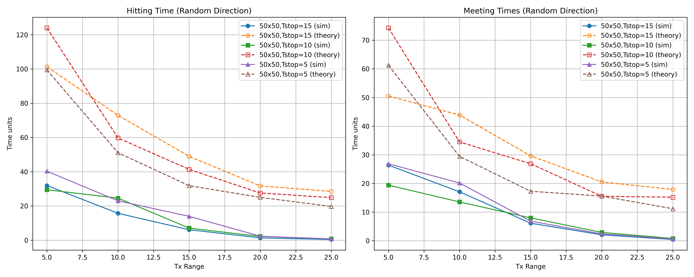

To answer this question, I’ll attempt to go through my code and explain my thought process before presenting my results. The first problem addressed and arguably of most importance was creating a class for my network.
Code
import numpy as npimport mathimport matplotlib.pyplot as pltfrom matplotlib.animation import FuncAnimationfrom mpl_toolkits.mplot3d import Axes3Dfrom scipy.spatial.distance import pdist, squareformimport matplotlibmatplotlib.use('Agg') class TorusRDSimulation:""" sim of nodes moving on a torus using the Random Direction (RD) mobility model. Calc Expected Hitting Time (ET) and Expected Meeting Time (EM). """def__init__(self, n_nodes=10, torus_width=50, torus_height=50, min_speed=1.0, max_speed=5.0, min_pause=2, max_pause=10, communication_range=10, seed=None):""" Init the simulation parameters. Parameters: ----------- n_nodes : int Number of nodes in the simulation torus_width : float Width of the torus torus_height : float Height of the torus min_speed : float Minimum movement speed of nodes max_speed : float Maximum movement speed of nodes min_pause : float Minimum pause time when reaching a destination max_pause : float Maximum pause time when reaching a destination communication_range : float Range within which nodes can communicate seed : int or None Random seed for reproducibility """self.n_nodes = n_nodesself.torus_width = torus_widthself.torus_height = torus_heightself.min_speed = min_speedself.max_speed = max_speedself.min_pause = min_pauseself.max_pause = max_pauseself.communication_range = communication_range# Init node statesself.positions = np.random.rand(n_nodes, 2) * [torus_width, torus_height]self.directions = np.random.uniform(0, 2*np.pi, n_nodes)self.speeds = np.random.uniform(min_speed, max_speed, n_nodes)self.pause_times = np.random.uniform(min_pause, max_pause, n_nodes)self.destinations =self._calculate_destinations()# flag to check if node has reached destinationself.reach_destination_flags = np.zeros(n_nodes, dtype=bool)# for statisticsself.first_meetings = np.full((n_nodes, n_nodes), np.inf)self.first_hits = np.full((n_nodes, n_nodes), np.inf)# keep track of trajectories for epoch lengthself.trajectories = [[] for _ inrange(n_nodes)]for i inrange(n_nodes):self.trajectories[i].append(self.positions[i].copy())self.epoch_length = [[] for _ inrange(n_nodes)]for i inrange(n_nodes):self.epoch_length[i].append(self._torus_distance(self.positions[i], self.destinations[i]))
Of note in the initialization stage is ensuring intitial node states are randomized. Directions, speeds and pause times were all taken from random uniform distributions, the latter two having ranges set by the user. Parameters to keep track of meeting and hit times are also intialized.
Next within the class, important functions regarding the formation of the torus shape were created.
Code
def _calculate_destinations(self):"""find random destinations for each node based on their current RD model state.""" destinations = np.zeros((self.n_nodes, 2))for i inrange(self.n_nodes):# find a point at a large distance in the current direction direction =self.directions[i] dx = np.cos(direction) *self.torus_width # use large mult to ensure crossing torus dy = np.sin(direction) *self.torus_height# find destination (taking torus wrapping into account) dest_x = (self.positions[i, 0] + dx) %self.torus_width dest_y = (self.positions[i, 1] + dy) %self.torus_height destinations[i] = [dest_x, dest_y]return destinationsdef _torus_distance(self, pos1, pos2):"""find the shortest distance between two points on a torus.""" dx = np.abs(pos1[0] - pos2[0]) dy = np.abs(pos1[1] - pos2[1])# wrapping around the torus dx =min(dx, self.torus_width - dx) dy =min(dy, self.torus_height - dy)return np.sqrt(dx**2+ dy**2)
The first method finds random destinations for each node based on their current RD model state. The usage of the modulo in dest_x and dest_y is done so that nodes wrap around on themselves as they would in a torus. The second method finds the shortest distance between two points on a torus (while considering wrapping around the torus). The next two methods involve updating the network as it runs.
Code
def _update_node(self, i, dt):"""Update the state of a node based on the RD mobility model."""# check if the node has reached its destinationifself.reach_destination_flags[i] ==True:ifself.pause_times[i] >0:# node is in a pause stateself.pause_times[i] -= dtreturn speed =self.speeds[i] direction =self.directions[i]# check if the node has reached its destination dist_to_dest =self._torus_distance(self.positions[i], self.destinations[i])if dist_to_dest < speed * dt: # node has reached or passed the destinationself.reach_destination_flags[i] =Trueifself.pause_times[i] >0:# node is in a pause stateself.pause_times[i] -= dtreturn# set new random directionself.directions[i] = np.random.uniform(0, 2*np.pi)# assign new random speedself.speeds[i] = np.random.uniform(self.min_speed, self.max_speed)# assign pause timeself.pause_times[i] = np.random.uniform(self.min_pause, self.max_pause)# find new destinationself.destinations[i] =self._calculate_destinations()[i]# update epoch lengthself.epoch_length[i].append(self._torus_distance(self.positions[i], self.destinations[i]))self.reach_destination_flags[i] =False dx = speed * np.cos(direction) * dt dy = speed * np.sin(direction) * dt# position with torus wrappingself.positions[i, 0] = (self.positions[i, 0] + dx) %self.torus_widthself.positions[i, 1] = (self.positions[i, 1] + dy) %self.torus_height# store trajectoryself.trajectories[i].append(self.positions[i].copy())def update(self, dt=0.1):"""update the simulation by one time step."""for i inrange(self.n_nodes):self._update_node(i, dt)# find distances between all pairs of nodesfor i inrange(self.n_nodes):for j inrange(i+1, self.n_nodes): dist =self._torus_distance(self.positions[i], self.positions[j])# look for meeting events (node i meets j)if dist <=self.communication_range:# update first meeting time if it hasnt been recorded yetif np.isinf(self.first_meetings[i, j]): current_time =len(self.trajectories[0]) * dtself.first_meetings[i, j] = current_timeself.first_meetings[j, i] = current_time# look for hitting event (node i reaches a specific location)# to simplify here we check if node i comes close to j's starting position dist_to_start =self._torus_distance(self.positions[i], self.trajectories[j][0])if dist_to_start <=self.communication_range and np.isinf(self.first_hits[i, j]): current_time =len(self.trajectories[0]) * dtself.first_hits[i, j] = current_time
update_node updates each node in the network as the simulation runs. It checks whether the node has traveled towards a destination for some amount of time, updating its location as it goes, and if it hits that mark, it is assigned a new random direction, speed, and pause time. update looks at the relationship between nodes at a given time, checking the distances between in order to clock meeting times. I wasn’t exactly sure how to institute hitting time 100 percent correctly, so I used a method to check whether a node contacts the others starting position as a close proxy for this task.
Now that the network class has been created, the function for running the actual simulation is created.
Code
def run_simulation(self, steps=1000, dt=0.1):"""run simulation for specified number of steps."""for _ inrange(steps):self.update(dt)# calc Expected Meeting Time (EM) valid_meetings =self.first_meetings[~np.isinf(self.first_meetings)] em = np.mean(valid_meetings) iflen(valid_meetings) >0else np.inf# calc Expected Hitting Time (ET) valid_hits =self.first_hits[~np.isinf(self.first_hits)] et = np.mean(valid_hits) iflen(valid_hits) >0else np.inf# calc key parameters for theoretical comparison# Average speed avg_speed = np.mean(self.speeds)# Average pause time avg_pause = np.mean(self.pause_times)# find probability that a node is mobile at a time# pm = T/(T+Tstop) where T is average movement time and Tstop is average pause time# for an RD model on a torus of width L, the expected epoch length is L according to paper 2 avg_epoch_length = np.mean([np.mean(epoch) for epoch inself.epoch_length]) avg_movement_time = avg_epoch_length / avg_speed p_mobile = avg_movement_time / (avg_movement_time + avg_pause) if avg_pause >0else1.0# normalized relative speed for RD # approximated for simulation comparison? v_rd = avg_speed * p_mobilereturn {'EM': em,'ET': et,'meeting_times': self.first_meetings,'hitting_times': self.first_hits,'avg_speed': avg_speed,'avg_pause': avg_pause,'epoch_length': avg_epoch_length,'p_mobile': p_mobile,'v_rd': v_rd }
The inputs for this function are the number of steps we want to go through and the “rate of change” (dt) of the network. I ended up using 1000 steps and a dt of .1, which works out to 100 seconds. I spent a good deal of time messing around with these inputs, and overall a dt lower than .1 didn’t seem to give me markedly better result (overall the simulation significantly outperformed my theoretical calculations, which I will discuss mor in the results section). For each step there is checks meets or hits occur (i.e. update table of each if non infinite value). I ended up averaging speeds and pause times for potential use in theoretical calculations. This gave me some hangups, as the papers - particularly number two pages 52 and 53 - found fixed values to approximate for these values for their findings. Overall, my results were slightly improved from my approach, but the veracity of them is something that I’d need more time and expertise to work out.
The next function attempts theoretical calculations of EM and ET times as they are explained in the papers. This function mostly follows the calculation steps set forth in paper two, and thus I won’t go into length explaining my code here. One thing of note is that I did go back and forth on using averaged epoch lengths from the simulations and the assumption stated in the paper for {L}. I ended up using the papers method, as it slightly improved the gaps between my simulated results and theoretical ones.
Code
def calculate_theoretical_values(N, K, L, v, T_stop, p_m=None, v_rd=None):""" calc theoretical Expected Hitting (ET) and Expected Meeting (EM) for RD model on torus. Parameters: ----------- N : int Network size (√N by √N) K : float Transmission range L : float Expected epoch length (average of epoch lengths) v : float expected node speed (average of node speeds) T_stop : float Average pause time p_m : float, optional Probability that a node is mobile at a time, calculated as T/(T+T_stop) where T is average movement time v_rd : float, optional Normalized relative speed for RD Returns: -------- dict Theoretical ET and EM values """ L = math.sqrt(N)# Calculate average movement time for an epoch T = L / v# Calculate probability mobile if not providedif p_m isNone: p_m = T / (T + T_stop) if T_stop >0else1.0# Calculate normalized relative speed if not providedif v_rd isNone: v_rd = v * p_m# Calculate ET_rd according to the formula ET_rd = (N / (2* K * L)) * (L / v + T_stop)# Calculate EM_rd according to the formula EM_rd = ET_rd / (p_m * v_rd +2* (1- p_m))return {'ET': ET_rd,'EM': EM_rd,'p_m': p_m,'v_rd': v_rd }
I won’t include the code for my plots here, as it is mainly recycled and edited from my visualizations from assignment one
Results
For each of my results, the following parameters were kept constant:
Transmission ranges from [5, 10, …, 25]
Speeds randomly chosen from a uniform distribution between 2 and 10
Two nodes. Intitially I had attempted to run this with >5 nodes, but as the theory seems to revolve around two nodes meeting and hitting in a sparse network, it seemed prudent to keep this to the minimum.
Results were averaged over 60 runs, with values needed from a simulation for theoretical calculations coming from the final run on each different increment of whatever parameter was variable.
The three figures below represent my findings from running different network sizes of 50x50, 75x75, and 100x100 with pause times ranging from 5, 10, and 15. 
I was disappointed that my results were so much different from those in paper two. Having handchecked the theoretical outputs on a number of occassions, I don’t believe that is the source of the difference. Some theories regarding my simulations low times include:
Not properly implementing the torus shape. I spent a large portion of time ensuring that my network did behave like a torus, but it’s hard to check this without more sophisticated knowledge on how to build interactive graphs. In the future, I’d like to perhaps figure out how to make an interactive chart that proves that my nodes do in fact wrap around as they are intended. More time is needed reading the literature, as it isn’t entirely clear to me whether the “cut corners” capable via wrapping around that can potentially create meeting opportunities are fully accounted for in the theoretical model.
Whether random nodes instantiation is correct. Perhaps there were mistakes made in how I randomly assigned starting locations, speeds, pause times, etc…, that made it so that my nodes were more likely to meet and hit than in the theoretical model.
Issues with my dt values. There is a chance that I didn’t explore low enough dt values (I only went to .025) and that cause missed meetings and made performance seem better.
These results and drawbacks were largely present when I tested with lower pause times of [1,3,5] and the same variations of network sizes and transmission ranges in the figures below.
Part II
a.
This problem involves a DTN with following characteristics:
Nodes with copies can inform each other when they give copies to other encountered nodes.
This feature allows for spraying copies to the network in minimum time.
Maximum copy limit (L_max) of 5 in the example.
The general routing algorithm with M nodes moving according to a mobility model with exponentially distributed meeting times is given as:
ED formula
For this L-copy protocol, the left bound represents epidemic routing (maximum spreading) and the right bound represents direct delivery, and protocol with information sharing should be between these bounds.
Since the protocol allows informing other nodes, the spray phase should potentially become more efficient than standard binary spray protocols. Expected delay would include:
Time to distribute all L copies through this spraying process.
Time until any of these L copies encounter the destination.
As such, my idea of of the formula is likely something like:
\[
ED = T_spray + T_wait
\]
Where T_spray represents time to distribute all L copies and T_wait being the expected time until any of the L copies meets the destination.
b.
To preface, my answer to this question is rather tenuous. My first step was to create a node class that represents network nodes which can be destination, source, and relay nodes per the block below.
Code
import numpy as npimport matplotlib.pyplot as pltfrom collections import defaultdict, dequeimport randomclass Node:def__init__(self, node_id, has_message=False, is_destination=False):self.node_id = node_idself.has_message = has_messageself.is_destination = is_destinationself.informed_nodes =set() #nodes this node has informedself.time_received =Nonedef__repr__(self): status ="D"ifself.is_destination else ("S"ifself.has_message else" ")returnf"Node-{self.node_id}[{status}]"
Next I attempted to create a dtn simulation class.
Code
class DTNSimulator:def__init__(self, num_nodes, mobility_rate, L_max):""" init dtn simulator Parameters: ----------- num_nodes: int Total number of nodes in network mobility_rate: float rate parameter for exponential distribution of meeting times L_max: int max number of copies allowed in network """self.num_nodes = num_nodesself.mobility_rate = mobility_rateself.L_max = L_maxself.nodes = []self.current_copies =0self.time =0self.events = []self.message_delivered =Falseself.delivery_time =Nonedef setup(self):"""set up network w/ nodes"""self.nodes = []# create nodesfor i inrange(self.num_nodes):self.nodes.append(Node(i))# set first node as source with initial messageself.nodes[0].has_message =Trueself.nodes[0].time_received =0self.current_copies =1# set last node as destinationself.nodes[-1].is_destination =True# reset simulation stateself.time =0self.message_delivered =Falseself.delivery_time =Noneself.events = []# create initial meeting events between all pairs of nodesself._generate_initial_meetings()def _generate_initial_meetings(self):"""generate initial meeting events b/t all pairs of nodes with exponential times"""self.events = []for i inrange(self.num_nodes):for j inrange(i+1, self.num_nodes):# create meeting time from exponential distribution meeting_time = np.random.exponential(1.0/self.mobility_rate)self.events.append((meeting_time, i, j))# sort by time...self.events.sort(key=lambda x: x[0])def _process_meeting(self, time, node1_id, node2_id):"""process meeting between two nodes""" node1 =self.nodes[node1_id] node2 =self.nodes[node2_id]# update curr timeself.time = time# see if one node is destination and other has messageif (node1.is_destination and node2.has_message) or (node2.is_destination and node1.has_message):self.message_delivered =Trueself.delivery_time = timereturnTrue# message exchange logic based on modified L-copy protocol. this is where I had the most issues...if node1.has_message andnot node2.has_message andself.current_copies <self.L_max:# node1 gives copy to node2 node2.has_message =True node2.time_received = timeself.current_copies +=1# inform other nodes that have messagefor node inself.nodes:if node.has_message and node.node_id != node1_id and node.node_id != node2_id: node1.informed_nodes.add(node.node_id) node.informed_nodes.add(node1.node_id)elif node2.has_message andnot node1.has_message andself.current_copies <self.L_max:# node2 gives copy to node1 node1.has_message =True node1.time_received = timeself.current_copies +=1# inform other nodes that have messagefor node inself.nodes:if node.has_message and node.node_id != node1_id and node.node_id != node2_id: node2.informed_nodes.add(node.node_id) node.informed_nodes.add(node2.node_id)# Schedule next meeting between these nodes next_meeting_time = time + np.random.exponential(1.0/self.mobility_rate)self.events.append((next_meeting_time, node1_id, node2_id))# sort events by timeself.events.sort(key=lambda x: x[0])returnFalsedef run_simulation(self, max_time=None):"""Run the simulation until message is delivered or max_time is reached"""whileself.events andnotself.message_delivered: time, node1_id, node2_id =self.events.pop(0)if max_time and time > max_time:breakself._process_meeting(time, node1_id, node2_id)returnself.delivery_time@staticmethoddef calculate_harmonic_number(n):"""find nth harmonic number"""returnsum(1/i for i inrange(1, n+1))def calculate_theoretical_bounds(self):"""Calculate theoretical bounds for expected delivery time"""# EM time based on mobility rate EM =1.0/self.mobility_rate# for M nodes with exponentially distributd meet times M =self.num_nodes# harmonic number H_M_minus_1 =self.calculate_harmonic_number(M-1)# lower bound (epidemic routing?) lower_bound = (H_M_minus_1 / (M-1)) * EM# upper bound (direct delivery) upper_bound = EM# I'm going to attempt to approximate as follows:# time to spray L copies + time for one of L copies to meet destination spray_time = (self.L_max -1) * (EM / (M-1)) # Idk if this is correct wait_time = EM /self.L_max # assume L copies independently searching l_copy_estimate = spray_time + wait_timereturn {"lower_bound": lower_bound,"upper_bound": upper_bound,"l_copy_estimate": l_copy_estimate }
The init parameters are very similar to those used in part 1 and were mostly derived from paper 4. For the setup phase method, I looked to set the first node as the source with the intial message and the last node as the destination of the message. For the generate initial meeting method, I use a random exponential distibution of times to set an expected meeting time for each node and sorted them by earliest times. The process meeting method is where I attempted to institute the l-copy protocol for eachanging messages. It checks if the meetings involve a destination (in which case we’re good to go). The logic following this pertains to whether messages are exchanges and informing other nodes that already have the message. Basically, an exchange occurs upon the XOR condition of node1 or node2 having the message (along with informing other message carriers). Upon this exchange, the nodes are assigned another random exponential meeting times and their exchange is recorded and sorted. This is followed by the run simulation method, which keeps track of exchange events while the message isn’t at its destination or it hasn’t run too long. The calculate harmonic numbers and theoretical bounds come largely from work in the paper. Spray time and wait times are my poor approximation of the probability based formulas from page 82 of paper number four and the previous question. This method concludes the simulator class, and the code that follows it involves running simulation batches (I chose to do 100), setting maximum time, and creating a graphical output. Given that these steps were borrowed from and edited from my work in part one, I won’t display them as a code block.
b Results
Below are the plotted results showing the difference between theoritical calculations on my attempt and the simulation.